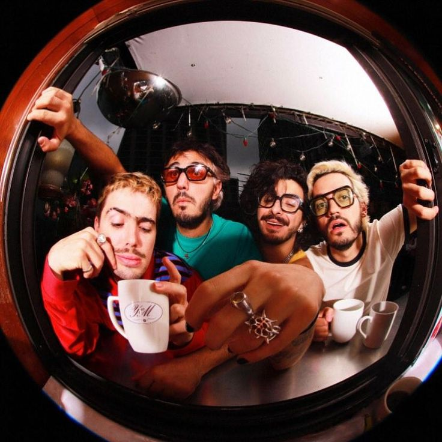

🦋Morat🦋

¿Quiénes son?
Morat es una banda colombiana formada en Bogotá. Su música mezcla pop latino, folk y rock acústico, creando un sonido reconocible desde los primeros acordes.
Sus canciones suelen hablar de amor, nostalgia, crecer, equivocarse y volver a intentarlo. Son una banda muy ligada a la emoción colectiva: cantar Morat siempre se siente como cantar algo propio.
Canciones más escuchadas
| Canción | Álbum | Año |
|---|---|---|
| Cómo Te Atreves | Sobre el Amor y sus Efectos Secundarios | 2016 |
| Besos en Guerra | Balas Perdidas | 2018 |
| Cuando Nadie Ve | Si Ayer Fuera Hoy | 2022 |
| París | Balas Perdidas | 2018 |
| No Se Va | Si Ayer Fuera Hoy | 2022 |
Sneak Peeks (mis favoritas)
A dónde Vamos
El Embrujo
Enamorate de alguien mas